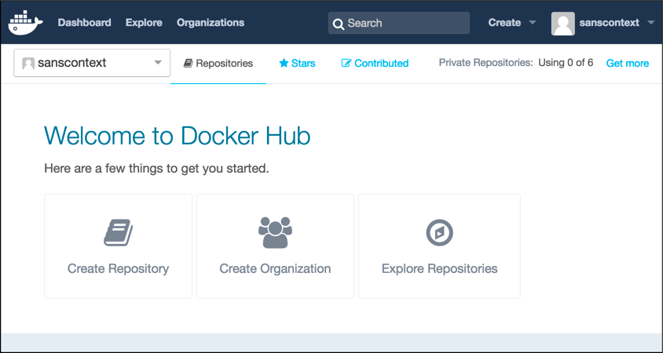

Docker
Abstract |
Docker |
Authors |
Walter Fan |
Category |
LearningNote |
Status |
WIP |
Updated |
2024-08-21 |
Overview


快速上手
docker 的命令很多, 可以用 docker help command 来获取详细帮助
操作 |
用法 |
例子 |
|---|---|---|
拉取 docker 镜像 |
docker pull [options] image_name[:tag] |
docker pull ubuntu:latest |
运行docker 实例 |
docker run [options] image_name [command] [args…] |
docker run -i -t –name mydocker ubuntu:latest /bin/bash |
获取 docker 镜像 |
docker images [options] image_name |
docker images |
Docker 实例更名 |
docker rename <old_container_name> <new_container_name> |
docker rename tomcat tomcat7 |
Docker 中命令的执行 |
docker exec [OPTIONS] CONTAINER COMMAND [ARG…] |
docker exec -it tomcat /bin/bash |
拷贝文件到 Docker 中 |
docker cp [OPTIONS] SRC_PATH CONTAINER:DEST_PATH |
docker cp ./examples/guestbook/target/guestbook.war tomcat:/usr/local/tomcat/webapps |
Docker with Selenium
Firefox
docker run -d -p 4444:4444 –shm-size=”2g” selenium/standalone-firefox:4.3.0-20220706
Chrome
docker run -d -p 4444:4444 –shm-size=”2g” selenium/standalone-chrome:4.3.0-20220706
Edge
docker run -d -p 4444:4444 –shm-size=”2g” selenium/standalone-edge:4.3.0-20220706
sudo apt-get install xorg openbox
sudo apt-get install ubuntu-desktop
sudo apt-get install vnc4server
Docker image
先试着运行一下 HelloWorld
docker run hello-world
Unable to find image 'hello-world:latest' locally
latest: Pulling from library/hello-world
这样会启动一个匿名的 docker 容器, 基于的镜像是 hello-world, 本地如果没有这个 image, 会到 github 上拉取
docker container 基于 image 启动, 镜像 Image 是由文件系统叠加起来的, 最底层是bootfs 当一个容器启动后, 它将会被移到内存中, 随即会 unmount bootfs
第二层是rootfs, 它可以是多种操作系统, unbuntu or centos, rootfs是只读状态的
docker 利用 union mount 技术会在 rootfs 上加载更多的只读文件系统, 各层文件系统叠加到一起, 最终的文件系统看起来象一个文件系统, 最终的文件系统叠加到一起, 最终的文件系统会包含所有的底层的文件和目录, 这样的文件系统就是 image
当容器启动时, 初始的读写层是空的, 当文件系统发生变化时, 该文件会从只读层复制读写层 (copy on write)
$ docker images
REPOSITORY TAG IMAGE ID CREATED SIZE
hello-world latest 693bce725149 9 days ago 967 B
centos latest 904d6c400333 2 weeks ago 196.8 MB
nginx latest 0d409d33b27e 2 weeks ago 182.8 MB
busybox latest 47bcc53f74dc 3 months ago 1.113 MB
列出 image
docker image
拉取 image
docker pull jenkins
启动 image (pull if it does not exist in local)
docker run -t -i --name my_jenkins jenkins /bin/bash
查找image
docker search jenkins
创建 image
docker commit <container_id> <new_image_name>
删除 image
docker rmi <image_name>
删除所有的退出的容器
sudo docker ps -a | grep Exit | cut -d ' ' -f 1 | xargs sudo docker rm
用 Dockerfile 构建image
create project folder
mkdir guestbook
cd guestbook
touch Dockerfile
Create Dockerfile 创建 Dockerfile
FROM centos:6.7
MAINTAINER Walter Fan "walter.fan@gmail.com"
RUN yum update
RUN yum install -y nginx
RUN echo "<html><body>Hello World</body></html>" > /usr/share/nginx/html/index.html
EXPOSE 80
Build dockerfile 根据 Dockerfile 来创建镜像
docker build -t="walterfan/hfkb:v1" .
Docker Hub
docker hub 类似于 maven 仓库, 持有各种 docker image 在 https://hub.docker.com 上创建 docker hub 帐号, 然后就可以上传自己的 Image 了
Docker Container
镜像是静态的文件系统, 容器是动态的运行实例
创建容器
# -i open standard input
# -t open pseudo tty
# -d dameon 在后台运行
docker create -it centos
查看 container 信息
docker inspect <container_name>
查看 container 运行情况
docker ps -a
运行 container
–name 指定container 名字
- -i
开启 stdin
- -t
分配一个伪 tty 终端
docker run -it centos:latest /bin/bash
停止 container
docker stop <container_id>
进入 container
docker attach <container_id>
执行 container 中的命令
docker exec -it <container_id> /bin/bash
重新启动 docker 容器
docker start <container_id>
附着到 docker 容器
docker attache <container_id>
启动和停止守护式容器
docker run --name <container_id> -d centos
docker stop wf_container
-d 守护方式 daemon 在后台运行 docker container
查看容器内部运行的进程
docker top <container_id>
docker ps <container_id>
查看容器内部信息
docker inspect <container_id>
在容器内部运行进程
docker exec -d <container_id> touch /opt/rh/readme.md
与容器创建一个base会话
docker exec -t -i <container_id> /bin/bash
删除一个容器
docker rm <container_id>
删除 container
# -f 强制终止并删除
# -l 删除容器的连接
# -v 删除所挂载的数据卷
docker rm <container_id>
导出 container
docker export <container_id> > xxx.tar
导入 container
cat xxx.tar|docker import - <container_name>/centos:v1.0
Docker data volume
运行 container, image=centos, name=ccp, 映射本地目录到 /opt/workspace
docker run -idt -P --name ccp -v /Users/walter/Documents/workspace:/opt/workspace centos
docker exec -it <container_id> /bin/bash
yum install -y gcc-c++
yum install -y make
yum install -y automake
Tips
运行 docker centos 容器
docker run -idt -P --name ccp -v /Users/walter/Documents/workspace:/opt/workspace centos
docker attache ccp
在 shell 环境中可以安装所需软件
$ yum install vim
如果 exit 退出则停止了 docker container, 可以用 docker start cpp 再启动起来
运行 docker busybox 容器 并执行 ‘echo’ command
$ docker run busybox echo hello world
运行 docker nginx 容器, 映射容器内部端口80到外部 host 端口8000
$ docker run -d -p 8000:80 nginx
升级 docker compose
#If installed via apt-get
sudo apt-get remove docker-compose
#If installed via curl
sudo rm /usr/local/bin/docker-compose
#If installed via pip
pip uninstall docker-compose
VERSION=$(curl --silent https://api.github.com/repos/docker/compose/releases/latest | jq .name -r)
Finally, download to your favorite $PATH-accessible location and set permissions:
DESTINATION=/usr/local/bin/docker-compose
sudo curl -L https://github.com/docker/compose/releases/download/${VERSION}/docker-compose-$(uname -s)-$(uname -m) -o $DESTINATION
sudo chmod 755 $DESTINATION